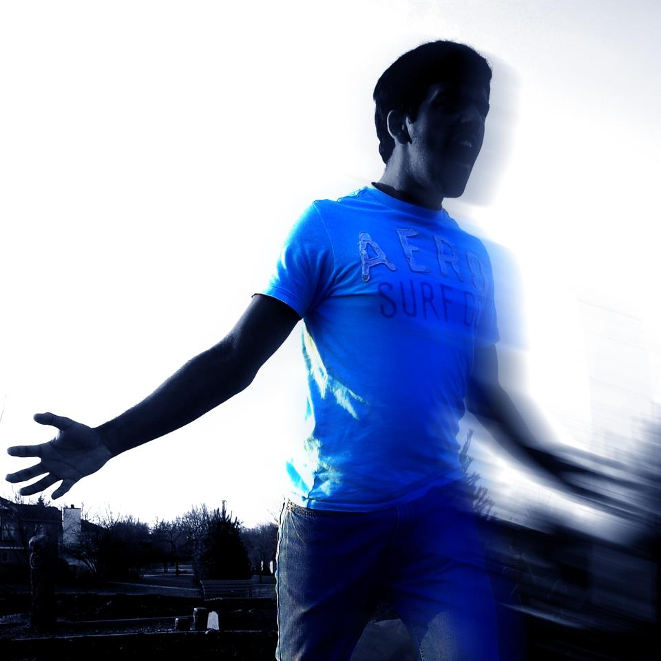

| [home] | [about me] | [projects] | [contact me] | [resume] |

I am a freshman in the University of Illinois at Urbana-Champaign, where I am currently majoring in Computer Science,
and am expected to graduate in 2017. Software development has always been an intriguing practice for me, and I look forward to
pursuing such practices, along with developing versatility in the many subjects that Computer Science covers, here at the
University of Illinois.
I am proficient in JAVA programming, doing it for three years, and having competed in the
Business Professionals of America's National Leadership Conference contest for JAVA programming, achieving
Top 10 status in 2013. I also look forward to developing my HTML/CSS skills and learning C++ to prepare for
real-world programming applications.
My hobbies include poi spinning,
the art of spinning tethered weights to various rhythmic and geometric patterns,
with bright LED light sticks (seen on the home page), and first-person shooter gaming,
mostly playing Battlefield 3 and
Star Wars: Battlefront II.
I look forward for a pleasant and uplifting experience here in the University of Illinois.